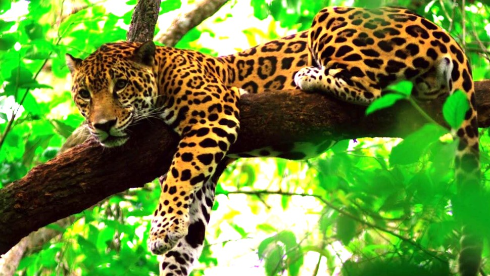

Jaguar
El Jaguar es el Felino más grande que habita en América, posee una visión binocular nocturna muy buena y uñas retráctales en sus patas, los jaguares acostumbran comer aves, peces, ciervos, primates, pecaries y serpientes, su hermoso pelaje esta cubierto por hermosas rosetas que le sirven como camuflaje al momento de cazar. Poseen un agudo sentido de la vista así como del oído y del olfato, son animales muy fuertes, inteligentes y hábiles ya que pueden llegar a cazar grandes presas como Venados y Tapires.